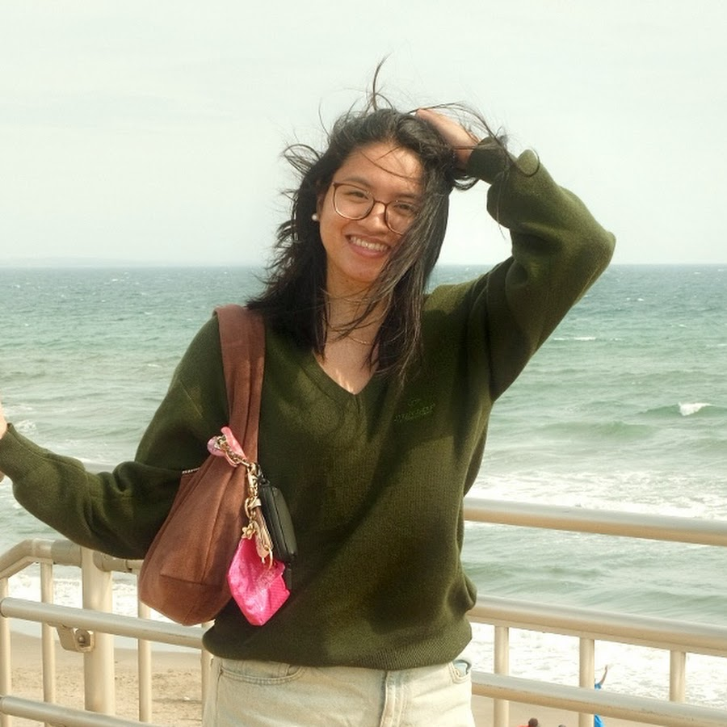
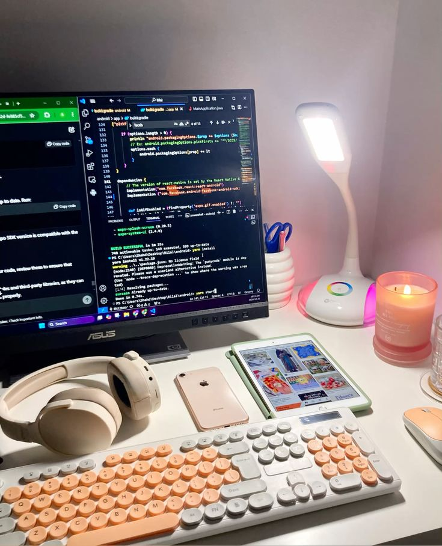

In todays digital world, social media is everywhere and we tend to spend hours watching and browsing the internet. In todays blog episode, Denise will share her top 3 favorite vloggers and youtube creators.
An overview to DenisePatricia's Top 3 Youtube Creators: Ellen Kelley Studies, Grace Mulgrew, and Cheeni Dy. These creators are known for sharing their daily routines and vlogs about their lives as students. They provide valuable insights and tips on how to stay motivated and productive in school while sharing their personal experiences. Denise hopes that by sharing her favorite creators, her readers can find inspiration and motivation in their own lives.


DenisePatricia is a 18 years old incoming BS IT student from the Philippines who aspire to be a web developer and designer in the next 5 years in her career. She puts her work and courage to take the Bachelor Science course to pursue her dream and be the best she can be. The author is inspired to build and design high performing websites and dreams to have her own blogging website where she can post content about her life, passion, and hobbies. As she welcomes you to her first blog post may you feel the joy and interest while reading her blog.
Who Is Ellen Kelley?
Ellen Kelley is a computer science student and YouTube creator who shares her everyday routine as a student. She also provides tips and advice on how to stay motivated and productive in school, sharing valuable study tips with her viewers.
Who Is Grace's Room?
Grace Mulgrew, most known as Grace's Room, became famous for her Barbie videos around 2016. She later created a second YouTube account where she uploads vlogs and personal routines while continuing her Barbie content on her main channel. Grace is a college student currently taking a communication course.
Who Is Cheeni Dy?
Cheeni Dy is a medical student at De La Salle University. She and her family are well known on social media. Cheeni films vlogs showcasing her life as a medical student in the Philippines.
| Blog Title | Content | Social Media Platform | Date |
|---|---|---|---|
| My Favorite Books Of All Time | I will write and provide the contents of my favorite books | I will post all of my blog in my facebook account | Between the start of May and end of May |